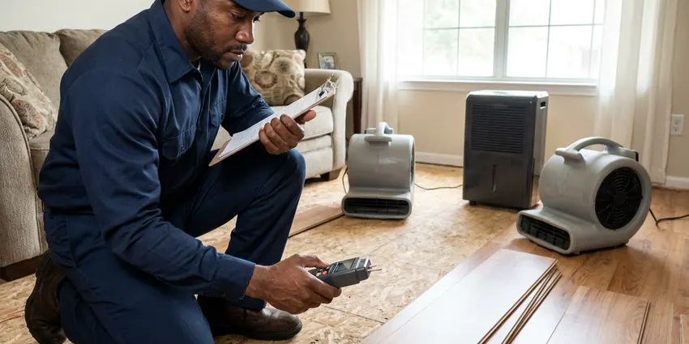

Drainage Services in Sherman, TX
Need professional drainage services in Sherman, TX? DFJ Plumbing offers comprehensive solutions for homeowners and businesses alike.
- Fast Drainage Repair
- Expert Technicians
- Upfront Pricing
- Satisfaction Guaranteed
Get Your Drains Flowing Freely in Sherman, TX.
We're ready to tackle any drainage challenge, big or small, to protect your property.
Your Go-To for Drainage Services in Sherman, TX
When you need effective drainage services in Sherman, TX, look no further than DFJ Plumbing. We understand the unique challenges Texas homes face, like expansive clay soils and sudden heavy rains, and we offer durable solutions to keep your drains clear and functional.
Our expertise includes:
- Advanced Hydro-Jetting for Tough Clogs
- Sewer Camera Inspections for Accurate Diagnosis
- Drain Line Repair and Replacement

Additional Plumbing Maintenance Services in Sherman, TX
Our maintenance and specialty plumbing services in Sherman, TX protect your home year-round and extend the life of every system.


Customers
Why Choose DFJ Plumbing for Drainage Services in Sherman, TX?
Our commitment to excellence ensures that every drainage service we provide is performed with meticulous attention to detail and a focus on preventing future issues.
- Local Expertise, We understand the specific drainage challenges faced by homes in Sherman, TX, including hard water mineral buildup and tree root intrusion.
- Advanced Tools, Our technicians utilize state-of-the-art equipment like video inspection cameras and hydro-jetting machines for precise and effective solutions.
- Comprehensive Solutions, From minor clogs to major line repairs and installations, we offer a full spectrum of drainage services.
Citywide Coverage
DFJ Plumbing proudly serves every neighborhood in Sherman and the surrounding communities, bringing expert drainage services right to your doorstep. No matter where you are located within the Sherman area, our team is ready to respond quickly to your drainage needs.
Experienced Team
Our plumbing technicians are highly trained and experienced in all aspects of drainage services, from diagnosing complex issues to performing precise repairs and installations. They stay updated on the latest techniques and local plumbing codes.
Safety-First Approach
We ensure that all drainage work complies with current building codes in Sherman, TX, preventing potential hazards and ensuring the long-term integrity of your plumbing system. Trust us for safe, compliant, and professional service.
Trusted Certified Sherman Plumbing Services Professionals
At DFJ Plumbing, we take pride in providing certified plumbing services throughout Sherman, TX. Backed by recognized industry credentials, our experienced plumbers combine technical skill with genuine customer care. Whether it is repair, installation, or maintenance, we follow strict safety and quality standards to deliver long-lasting results you can trust.
Call Us Now PHCC Plumbing Contractor Recognition
PHCC Plumbing Contractor Recognition Better Business Bureau (BBB) Accreditation
Better Business Bureau (BBB) Accreditation Angi Certified Pro
Angi Certified Pro ISO 9001 Quality Management Certification
ISO 9001 Quality Management CertificationDependable Drainage Services in Sherman, TX
Residential Drain Cleaning in Sherman
Slow drains or recurring clogs in your home are more than just an inconvenience; they can signal bigger issues. Our residential drain cleaning service in Sherman utilizes advanced tools like augers and hydro-jetting to clear blockages from kitchen sinks, bathroom drains, and laundry lines. We tackle common culprits like grease buildup, hair, and soap scum, restoring full flow and preventing backups, which are particularly common in older Texas homes with aging pipe systems.

Sewer Line Repair & Replacement in Sherman, TX
Issues with your main sewer line can lead to significant problems, including foul odors and widespread backups. Our sewer line services in Sherman, TX begin with thorough camera inspections to accurately locate breaks, cracks, or tree root intrusions. We offer both trenchless repair options, like pipe lining or bursting, and traditional excavation methods, depending on the severity and location of the damage, minimizing disruption to your property.
Hydro-Jetting Services in Sherman
For the toughest clogs and stubborn buildup, our hydro-jetting service in Sherman is the most effective solution. This method uses high-pressure water streams to scour the interior of your pipes, removing years of accumulated grease, scale, and debris. It's an ideal preventative maintenance tool, especially for commercial kitchens or homes with persistent hard water issues, leaving your pipes remarkably clean and free-flowing.
Storm Drain & French Drain Installation in Sherman, TX
Texas weather can bring sudden, heavy downpours, making proper storm drainage crucial. We design and install effective storm drain and French drain systems in Sherman, TX to divert excess water away from your foundation, preventing erosion and water damage. These systems are essential for managing runoff on properties with poor grading or expansive clay soils, protecting your home's structural integrity.
Commercial Drainage Solutions in Sherman
Businesses in Sherman rely on efficient drainage systems to operate smoothly. We provide specialized commercial drainage solutions for restaurants, retail spaces, and industrial facilities. From grease trap cleaning and maintenance to large-scale storm drain management, our services minimize downtime and ensure compliance with health and safety regulations, handling the unique demands of commercial plumbing.
Emergency Drainage Services in Sherman, TX
Drainage emergencies don't wait for business hours. DFJ Plumbing offers 24/7 emergency drainage services in Sherman, TX for urgent issues like severe backups, burst pipes, or overflowing storm drains. Our rapid response team is equipped to diagnose and resolve critical problems quickly, preventing extensive water damage and restoring functionality to your plumbing system when you need it most.
Drainage System Maintenance in Sherman
Proactive maintenance is key to avoiding costly drainage problems. Our drainage system maintenance services in Sherman include routine inspections, preventative drain cleaning, and recommendations for addressing potential issues before they escalate. Regular maintenance helps to extend the lifespan of your plumbing system, reduce the risk of unexpected repairs, and ensure optimal performance year-round.

Sump Pump Services in Sherman, TX
For homes prone to basement or crawl space flooding, a reliable sump pump is vital. We offer comprehensive sump pump services in Sherman, TX, including installation, repair, and maintenance of various models, such as Zoeller and Little Giant. Our technicians ensure your sump pump is correctly sized and installed to effectively remove groundwater, protecting your home from water intrusion, especially during heavy Texas rains.
Drainage Services Near Me in Sherman, TX
Looking for reliable drainage services near me in Sherman, TX? DFJ Plumbing is your local expert, providing prompt and professional solutions for all your residential and commercial drainage needs. Our team is always ready to dispatch to your location.
We pride ourselves on being the go-to provider for comprehensive drainage services near me throughout the Sherman area. Our local presence ensures quick response times and personalized service for every customer.
DFJ Plumbing at a Glance
- Fully licensed plumbing team covering Sherman, TX
- Same-day appointments and 24/7 emergency response
- Clear written estimates, no hidden fees
- 4.9-star rated by 812+ Texas customers
Sherman Map
Sherman Information
- Population
- 47,473
- Area codes
- 903/469/214
- Service area
- Sherman and communities within 40 miles
- Nearby
- McKinney, Little Elm, Frisco, Allen
Effective drainage services are critical for homes in Sherman, TX due to the region's expansive clay soils, which can shift and damage underground pipes, and the potential for sudden, intense rainfall that can overwhelm inadequate drainage systems.
Expert Services
Trust our professionals for reliable DFJ Plumbing solutions in Sherman, TX.
Our Specialized Plumbing Services in Sherman, TX
At DFJ Plumbing, we provide a complete range of plumbing services across Sherman, TX. From leak detection to full system installations, our team ensures fast, precise, and affordable service for both residential and commercial properties. Explore our core services below:


How Our Drainage Services Process Works in Sherman, TX
Our systematic approach to drainage services ensures that every step is handled professionally and transparently, from your initial call to the completion of the job.
Request a Quote
Start by calling us at (737) 405-5978 or filling out our online form to describe your drainage issue. We'll gather necessary details and schedule a convenient time for a service visit.
Diagnosis & Plan
Our technician will arrive on time to thoroughly inspect your drainage system, often using camera inspection. We'll explain the problem and present a clear, upfront estimate for the recommended solution.
Expert Service
Once approved, our team will perform the drainage service using specialized tools and techniques. We work efficiently, adhering to all safety protocols and local codes.
Frequently Asked Questions About Drainage Services in Sherman
The cost of drainage services in Sherman, TX varies widely depending on the type and severity of the issue. A basic drain cleaning might range from $150 to $400, while more complex issues like main sewer line repairs or hydro-jetting could be anywhere from $500 to several thousand dollars. We always provide a detailed, upfront estimate before starting any work.
Drain cleaning typically uses snaking or augering to clear simple clogs. Hydro-jetting uses high-pressure water to thoroughly scour the inside of pipes, removing stubborn buildup like grease, scale, and tree roots. Hydro-jetting provides a much deeper clean and is excellent for preventative maintenance or severe blockages.
Yes, major sewer line repairs or replacements in Sherman, TX typically require plumbing permits to ensure the work complies with local building codes. DFJ Plumbing handles all necessary permitting processes, ensuring your project is fully compliant and passes all required inspections.
We commonly install and service high-quality sump pump brands such as Zoeller, Little Giant, Wayne, and Liberty Pumps. Our technicians can help you choose the best model for your specific needs, considering factors like horsepower, pump type, and reliability for Texas weather conditions.
Yes, DFJ Plumbing stands behind the quality of our work. We offer warranties on our drainage services, including parts and labor. The specific warranty period can vary depending on the type of service performed, such as drain cleaning or sewer line replacement, and will be clearly communicated in your service agreement.
For most homes, a preventative drain cleaning every one to two years is sufficient. However, if you have chronic issues with slow drains, older plumbing, or frequently dispose of grease, more frequent cleaning might be beneficial. Commercial kitchens, for example, often require quarterly or semi-annual service.
We strongly advise against using chemical drain cleaners. They can be corrosive, potentially damaging your pipes, especially older ones common in Texas, and are often ineffective against tough clogs. They also pose a safety risk to anyone who later works on the drain. Professional tools are much safer and more effective.
Common signs include slow draining sinks or tubs, gurgling sounds from drains, foul odors coming from drains, water backing up into fixtures, and soggy spots in your yard. If you notice any of these, it's wise to call a professional plumber.
What People Are Saying About Our Plumbing Experts?

Laura S.
I scheduled a water heater replacement, and the team made the process smooth and affordable. The new unit works perfectly, and they cleaned up after completing the job.
Water Heater Replacement · Little Elm, TX
Robert G.
The trenchless sewer replacement saved our front yard. They walked us through the camera inspection footage first so we knew exactly what we were paying for.
Sewer Line Replacement · Sherman, TX
Daniel K.
A pipe burst at 11 pm and they actually answered. The plumber showed up within the hour, shut everything down, and had us back to normal the next morning. Could not ask for more.
Emergency Plumbing · Frisco, TX
Mark T.
When our office needed drain cleaning, DFJ Plumbing provided quick, reliable service. The plumber arrived on time and made sure every drain flowed perfectly before leaving. Very satisfied.
Drain Cleaning · Little Elm, TXJames P.
Our commercial plumbing system had a leak under the sink, and DFJ Plumbing handled it professionally. The plumbers arrived quickly and restored everything without disruption to our customers.
Commercial Plumbing · McKinney, TXSofia M.
Two new toilets installed in one visit, no mess left behind, and the tech even adjusted a faucet he noticed was dripping. Fair pricing and really friendly.
Toilet Installation · Little Elm, TX